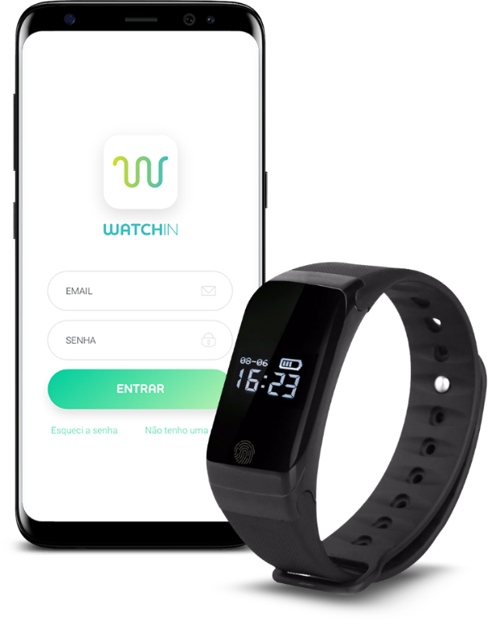

WatchIn
APP - UX - UI - Health
- Client SOL / Integra Home Care
- Company IdeiaTrupe
- Year 2018

The absence of children in their parent’s lives after they reach an age that requires a little more care. Occurrences such as falls, hypertension crises, difficulty sleeping, lack of physical activity, usually build a sense of guilt in their sons, giving the impression that this could be avoided if he hadn’t be so absent, always involved with his career, work obligations, and other things.
As a solution to this problem, Watch In, a product of SOL - Saúde On Line (Health On Line) was created, consisting of a smartband and an APP that monitors information from the user's body, and allows monitoring via APP. This follow-up can be shared with family members and a SOL medical team.
In APP, there are 3 main categories of users: THE USER of the bracelet, which may accompany their own data, THE FAMILY, which may accompany the health information of the User and THE CAREGIVER, who is the SOL health professional accompanying one or more users.
Bio 79 years old, retired, father of 6 children, Mr. Antonio lives with Mrs. Cecilia, his companion in a comfortable apartment in a middle class neighborhood. He misses living in a house and having a table full of children and grandchildren. Today, 4 of his sons live in other states and those who live in the same city are always distant, taking care of their careers. After the grandchildren went to college they became more absent as well. Today, Mr. Antônio's routine involves small walks near the condominium, and trips to the pharmacy, bakery and everyday things he makes a point of going, as it’s an opportunity to get out of the apartament and have contact with the people of the neighborhood.
Bio Systems Analyst, 33 Years old, Rafael is the youngest son of Mr. Antonio. After the marriage he received a job offer from a multinational in another state, which made his routine change drastically. In the beginning, he visited his parents every 2 or 3 months, but over time, the contacts became just a few sporadic connections, which he uses to expose what has been achieved in his new job. They are currently planning their first child and Rafael is chasing after better results eyeing a promotion, which will provide an interesting salary increase for the plan to have children. In the few moments he speaks to his other brothers, he criticizes those who stayed around for not paying attention, but at the same time he feels a sense of guilt for knowing that he does not do enough for them today.
Bio 34, Fernanda lived in a small country town, and when she finished high school, she moved to the capital to study nursing. After beginning to work at the Health Office of the City Hall, she was highly praised for her care with each patient in a caring and helpful manner. As she was professionally firming, she used the financial resources to acquire more knowledge and try to assist her patients more assertively.